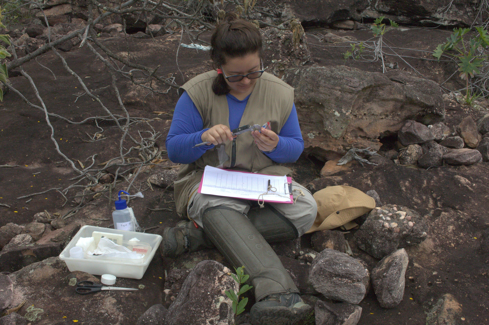
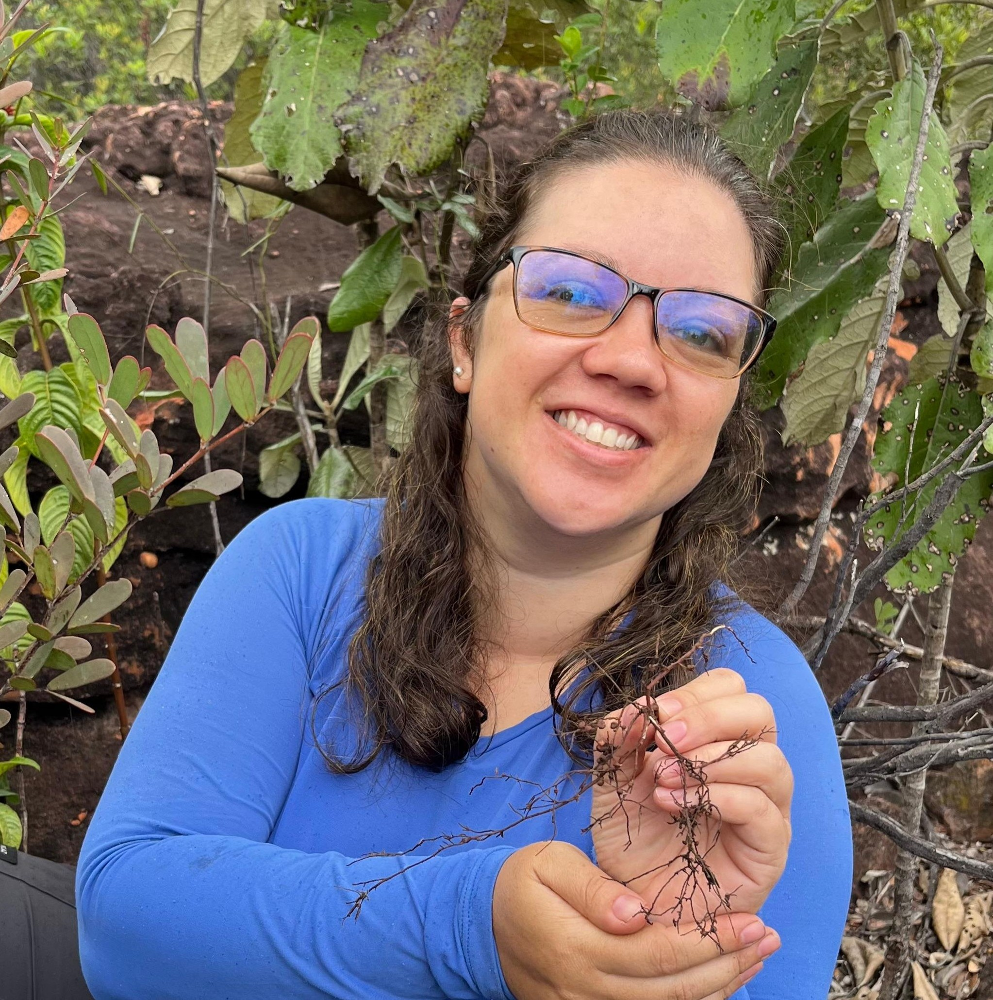
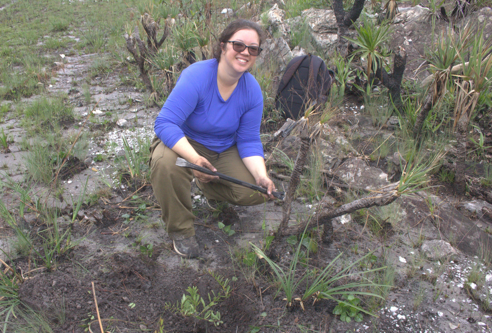

Luana de Souza Prochazka
Doutorado pelo Programa de Biodiversidade Vegetal e Meio Ambiente - Instituto de Pesquisas Ambientais (IPA)
- Evolução de mutualismos
- Ecologia e evolução de plantas
- Filogenética comparativa
- Características funcionais
Sobre
No doutorado, investigou como os mutualismos de defesa e nutrição evoluíram em uma linhagem do gênero Chamaecrista (Fabaceae). Analisou se os nectários extraflorais e a nodulação por bactérias fixadoras de nitrogênio evoluíram em associação com mudanças no nicho ambiental e em características funcionais das plantas, como estratégia de história de vida e massa foliar por área (LMA). Para isso, integrou dados de campo, herbário e literatura a análises filogenéticas comparativas.
Bacharela e Licenciada em Ciências Biológicas e Bacharela em Ciência e Tecnologia pela UFABC (2014–2017) e doutora em Biodiversidade Vegetal e Meio Ambiente pelo Instituto de Botânica (2020–2025). Atualmente atua na Central Multiusuário de Biodiversidade e Conservação da UFABC. Seus interesses de pesquisa concentram-se na história evolutiva das plantas e de suas interações ecológicas, especialmente nos mutualismos de defesa e nutrição, com foco em como características funcionais e condições ambientais influenciam essas interações em ambientes sazonais e sujeitos a distúrbios.
Trajetória no LIPA
Clique em uma etapa para ver detalhes.
2020–2025 · Instituto de Botânica, IBT, SP
- Orientador:
- Anselmo Nogueira
- Coorientadora:
- Suzana de Fátima Alcantara
- Bolsa:
- FAPESP
- Título:
- Evolução coordenada entre estratégia ecológica, nicho ambiental e mutualismos de defesa e nutrição em uma linhagem de leguminosas.



